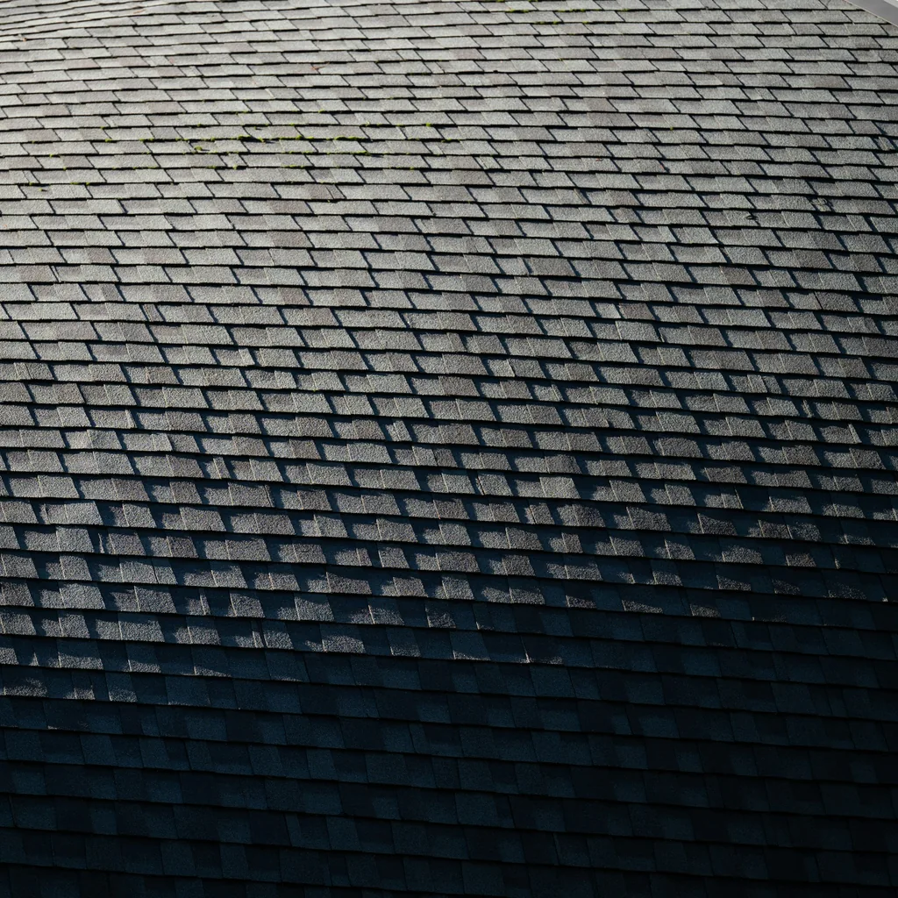
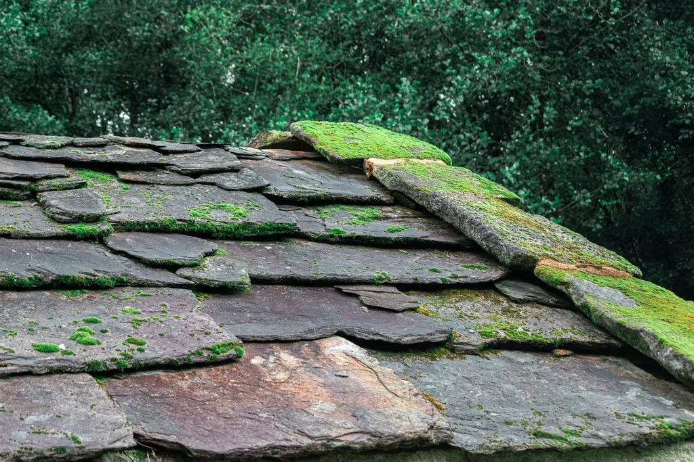
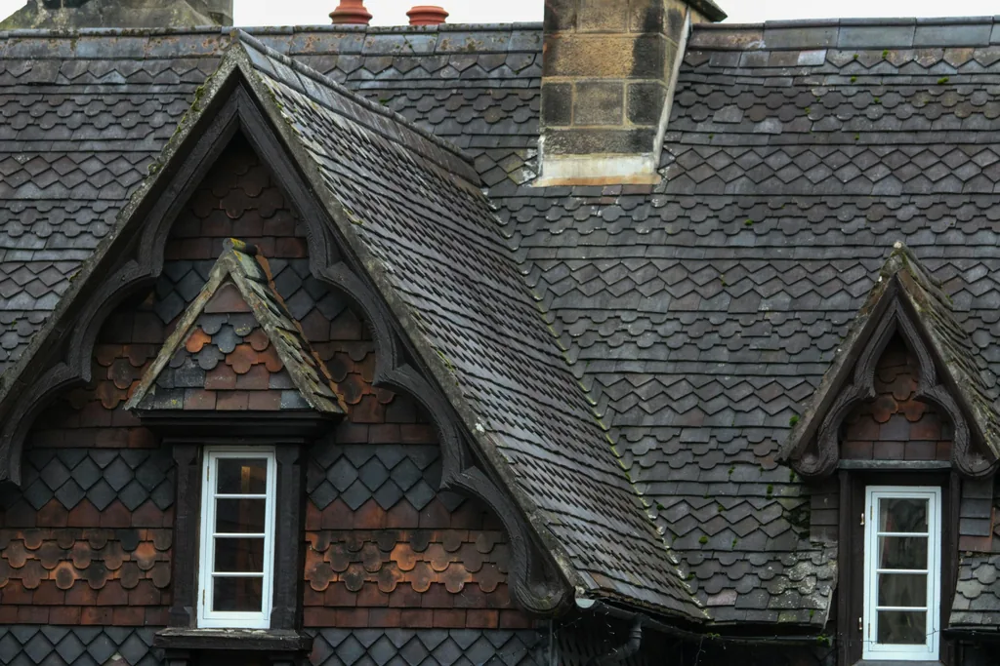
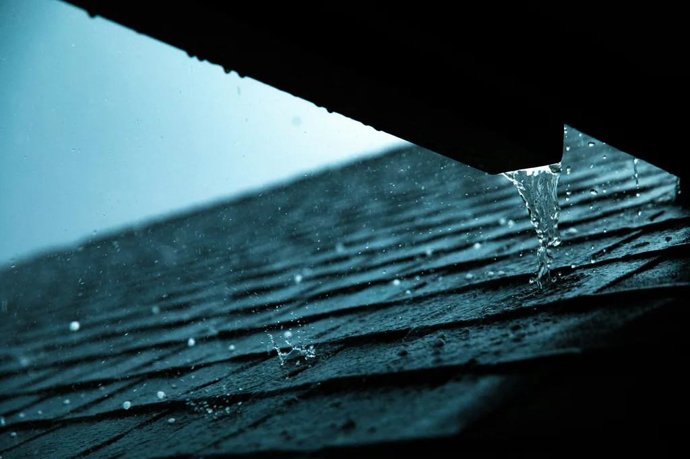

Démoussage et entretien des toitures en ardoise
Je nettoie et démousse les toitures en ardoise mécaniquement, sans nettoyeur haute pression. Je propose également des traitements antimousse et hydrofuge.


Un devis selon votre toiture
Le devis est gratuit et tient compte de la toiture, de sa surface et des conditions d’accès. Je propose plusieurs formules pour son entretien.

Gouttières et chéneaux
Je nettoie les gouttières et les chéneaux, et je propose une prestation qui associe démoussage de la toiture et nettoyage des gouttières.
Quand prévoir le démoussage
Je conseille un intervalle de cinq ans entre deux démoussages. Les rendez-vous se prennent à votre demande, sans contrat périodique.

Questions fréquentes
Le démoussage se fait-il à haute pression ?
Je nettoie les toitures en ardoise mécaniquement, sans nettoyeur haute pression. Je propose également des traitements antimousse et hydrofuge.
Puis-je faire nettoyer mes gouttières en même temps ?
Le démoussage peut être associé au nettoyage des gouttières dans une même prestation. Je réalise aussi le nettoyage des chéneaux.
Commençons par un échange
Pour préparer votre devis, indiquez-moi votre commune, la surface de la toiture si vous la connaissez et les conditions d’accès.